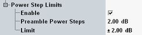

During a random access procedure, the UE is expected to transmit RACH preambles at increasing power:
- Until the NodeB sends an ACK on the AICH or
- Until the maximum number of preambles within one cycle is exceeded
In the configuration dialog, you can specify the expected step size and a symmetrical tolerance value. The limit applies to all preamble steps. Exception: If the preamble power exceeds the nominal maximum power plus the lower limit (see "Maximum Output Power Limits"), no limit check is applied to the related steps.
When the combined signal path scenario is active, the expected step size parameter ("Preamble Power Steps") is controlled by the signaling application.
The expected step size "Preamble Power Steps" is also used to calculate the expected preamble power and to adapt the expected nominal power internally during the preamble cycle.
Please note that 3GPP TS 34.121 specifies no test requirement for the accuracy of the preamble power step size. But the minimum requirements section 5.5.2 Transmit ON/OFF Time Mask contains a reference to 3GPP TS 25.101, section 6.5.2.1 and a table of power step size tolerances.
